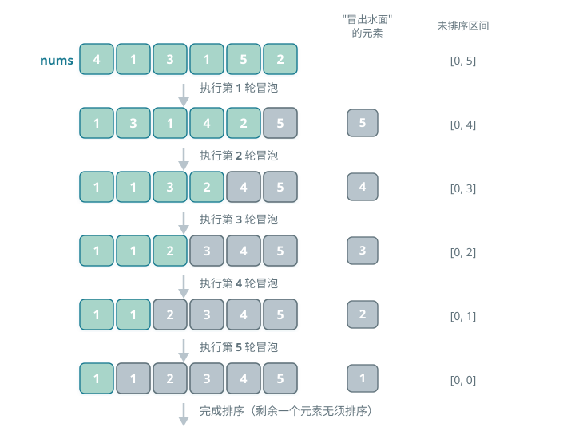

冒泡排序（Bubble Sort）
冒泡排序通过连续地比较与交换相邻元素实现排序。
这个过程就像气泡从底部升到顶部一样，因此得名冒泡排序。
冒泡过程模拟
如图所示，冒泡过程可以利用元素交换操作来模拟：从数组最左端开始向右遍历，依次比较相邻元素大小，如果"左元素 > 右元素"就交换二者。遍历完成后，最大的元素会被移动到数组的最右端。
算法流程
设数组的长度为 n，冒泡排序的步骤如图所示。
- 首先，对 n 个元素执行"冒泡"，将数组的最大元素交换至正确位置。
- 接下来，对剩余 n-1 个元素执行"冒泡"，将第二大元素交换至正确位置。
- 以此类推，经过 n-1 轮"冒泡"后，前 n-1 大的元素都被交换至正确位置。
- 仅剩的一个元素必定是最小元素，无须排序，因此数组排序完成。

算法特性
- 时间复杂度为 O(n²)、自适应排序：各轮"冒泡"遍历的数组长度依次为 n-1、n-2、...、2、1，总和为 (n-1)n/2。在引入 flag 优化后，最佳时间复杂度可达到 O(n)。
- 空间复杂度为 O(1)、原地排序：指针 i 和 j 使用常数大小的额外空间。
- 稳定排序：由于在"冒泡"中遇到相等元素不交换。
Baseline 任务 1：冒泡排序的基础实现
任务内容
完成 BubbleSort.cpp，实现冒泡排序：
- 重复遍历数组，依次比较相邻元素并交换
- 每次循环将最大元素"冒泡"到末尾
- 原地排序、稳定排序
- 时间复杂度：O(n²)
- 空间复杂度：O(1)
验证方式
- 编译：
g++ testBubbleSort.cpp BubbleSort.cpp -o testBubbleSort - 运行：
./testBubbleSort
Baseline 任务 2：冒泡排序算法的优化
在实践中，我们会发现冒泡排序存在明显的短板：例如，在数组已经有序时仍会进行无用遍历；在部分有序的数组中会进行大量无效比较；或者在处理"小元素在末尾"的场景时，移动效率极低。
这些问题都指向了一个方向：冒泡排序还有很大的优化空间。
任务内容：带提前终止的冒泡排序
原始冒泡排序无论数组是否有序，都会执行完整的双层循环，造成大量冗余操作。尝试实现带有序检测的冒泡排序：
- 核心思想：在每一轮遍历中记录是否发生交换，若某一轮未交换任何元素，说明数组已有序，直接提前终止排序。
- 要求：
- 实现
void BubbleSortEarlyExit(vector<int>& arr)函数。 - 编写测试程序，验证该算法在不同场景下的正确性（如随机数组、有序数组、逆序数组）。
- 分析其与简单冒泡排序的时间复杂度对比（理论与实际运行时间），并解释其改进点。
- 实现
文件结构
BubbleSort.h：冒泡排序函数声明BubbleSort.cpp：冒泡排序核心算法实现testBubbleSort.cpp：测试程序，验证排序功能正确性